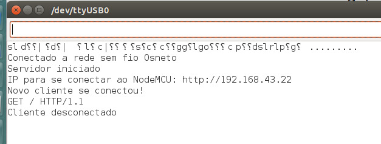
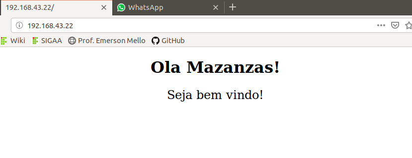

Conectividade IP do módulo de transmissão utilizando NODEMCU ESP8266 - Parte 1.
Nesta etapa do projeto será desenvolvida e testada a parte de conectividade na rede wifi. Como primeiro passo, a equipe resolveu realizar uma troca de equipamento entre o módulo ESP8266 por um módulo NODEMCU ESP8266 devido a uma maior facilidade que este novo componente trouxe para a solução deste problema de conexão.
O teste de conexão ocorrerá da seguinte, será implementado um código que realiza uma conexão com a rede wifi local, com isso será possível saber o IP que o módulo está utilizando e assim será gerada uma página web de teste. Aqui está publicado o código desenvolvido para este processo:
A figura 1 demonstra a saída da execução deste código, nela é possível enxergar o ip atribui para o NODEMCU assim como a página criados para o teste. Já na figura 2 está própria página, referenciada pelo IP atribuído ao módulo.
Figura 1 - Saída da simulação.
Figura 2 - Página web para teste.